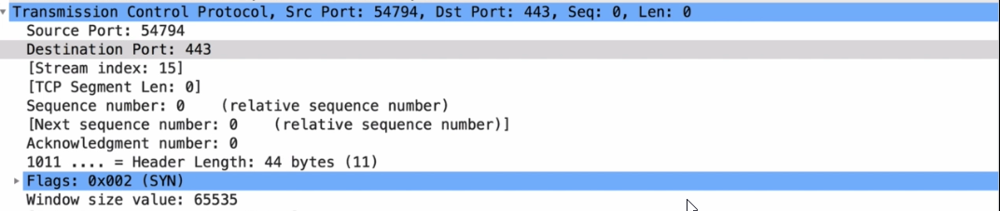

-->Enabling SSL&TLS is not a guarantee that your site is fully secured
-->we check ssl in www.ssllabs.com/ssl-pulse/
-->Google give high rank for website use https
------------------------------------------------------------
-->Each certificate has certain time and if time is out of range the certificate become unvalid
http-->port:80
https-->port:443
Source Port: chosen randomly and it's always larger than 1024
Destination Port: 443(https)


-->Designed in the early 1990s,
HTTP is an extensible protocol which has evolved over time. It is an
application layer protocol that is sent over TCP, or over a TLS-encrypted TCP connection
-->All data sent is encrypted using a special key
-->HTTPS uses TLS(transport layer of security) that is responsible for encryption of application data
---------------------------------------------------------